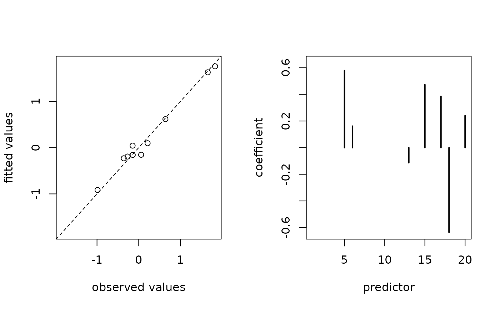

Extracts fitted values.
Usage
# S3 method for class 'cv.corila'
fitted(object, ...)See also
Use predict() to obtain predicted values (i.e., for testing observations).
Examples
# listing S3 methods
methods(class = "cv.corila")
#> [1] coef deviance fitted nobs plot predict print
#> [8] residuals summary
#> see '?methods' for accessing help and source code
# fitting the model
n <- 10; p <- 20; q <- 5
x <- matrix(rnorm(n * p), nrow = n , ncol = p)
y <- rnorm(n)
group <- rep(seq_len(q), length.out = p)
primary <- as.logical(rbinom(n = p, size = 1, prob = 0.5))
object <- cv.corila(x = x, y = y, group = group, primary = primary)
#> Warning: Option grouped=FALSE enforced in cv.glmnet, since < 3 observations per fold
# using S3 methods
coef(object)
#> [1] -0.05752680 0.00000000 -0.64792795 -0.07879337 -0.20975336 0.00000000
#> [7] 0.00000000 0.00000000 0.00000000 0.00000000 0.00000000 0.00000000
#> [13] 0.00000000 0.00000000 0.00000000 0.47249021 0.20404356 0.00000000
#> [19] 0.00000000 0.00000000 0.66532042
predict(object, newx = x)
#> [1] -0.80032044 -0.40982787 1.70471326 0.36985147 1.36077075 -0.48432243
#> [7] -0.29995985 0.08166795 2.11920544 -0.28119109
fitted(object)
#> [1] -0.80032044 -0.40982787 1.70471326 0.36985147 1.36077075 -0.48432243
#> [7] -0.29995985 0.08166795 2.11920544 -0.28119109
residuals(object)
#> [1] -0.070983080 0.123554540 0.005582696 -0.159285543 -0.016391158
#> [6] -0.290471664 -0.269100262 0.445668941 0.164305549 0.067119980
plot(object)

print(object)
#> object of class ‘cv.corila’
#> (contains multiple objects of class ‘cv.glmnet’)
#> selected 6 from 20 predictors
summary(object)
#> --- object of class “cv.corila” ---
#> generalised linear model with gaussian family
#> 20 features (10 primary and 10 auxiliary features)
#> initial coefficients: ridge regression
#> final coefficients: adaptive lasso regression
#> optimised regularisation parameter: lambda.min = 0.02372
#> selected weights: local = 0, global = 1
#> selected exponents: local = Inf, global = 1
#> 7 non-zero coefficients (including intercept)